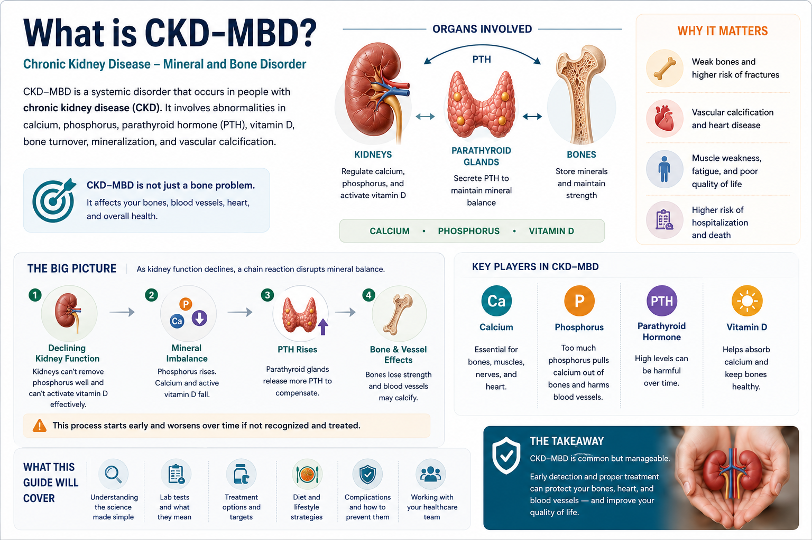
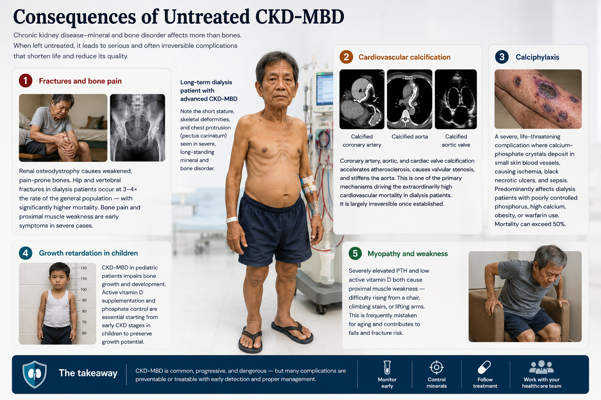
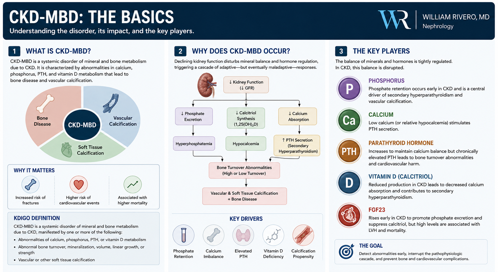
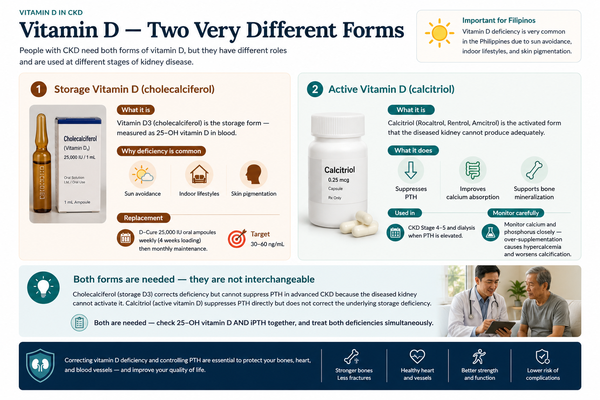

What Is CKD-MBD?Ano ang CKD-MBD?Unsa ang CKD-MBD? Ano ing CKD-MBD?

CKD-MBD begins silently in Stage 3. By the time bones hurt or arteries are calcified, damage is already advanced. Regular PTH, calcium, and phosphorus monitoring is non-negotiable.Ang CKD-MBD ay nagsisimula nang tahimik sa Stage 3. Sa oras na masakit ang mga buto o calcified na ang mga arteria, advanced na ang pinsala. Ang regular na pagmo-monitor ng PTH, calcium, at phosphorus ay hindi mapag-usapan.Ang CKD-MBD nagsugod nga hilom sa Stage 3. Sa panahon nga masakiton ang mga bukog o calcified na ang mga arteria, advanced na ang kadaot. Ang regular nga pagmonitor sa PTH, calcium, ug phosphorus dili mapagkasabutan. Ing CKD-MBD ya nagsisimula nang tahimik king Stage 3. King oras a masakit ing deng buto o calcified a ing deng arteria, advanced a ing pinsala. Ing regular a pagmo-monitor ning PTH, calcium, at phosphorus ya ali mapag-usapan.
CKD-MBD stands for Chronic Kidney Disease — Mineral and Bone Disorder. It is not just a bone problem. It is a systemic disorder in which failing kidneys disrupt the entire mineral metabolism axis — causing bones to weaken, blood vessels to calcify, and the heart to be placed at dramatically higher risk of fatal events. It begins in Stage 3 and worsens progressively.Ang CKD-MBD ay nangangahulugang Chronic Kidney Disease — Mineral and Bone Disorder. Hindi lamang ito isang problema sa buto. Ito ay isang sistematikong karamdaman kung saan ang nabigong mga bato ay gumagulo sa buong mineral metabolism axis — nagdudulot ng paghinahina ng mga buto, pagtitigas ng mga daluyan ng dugo, at naglalagay sa puso sa dramatikong mas mataas na panganib ng mga nakamamatay na pangyayari. Nagsisimula ito sa Stage 3 at lumalala nang progresibo.Ang CKD-MBD nagpasabot sa Chronic Kidney Disease — Mineral and Bone Disorder. Dili lamang kini problema sa bukog. Usa ka sistematiko nga sakit diin ang nabigong mga kidney naglaglag sa tibuok mineral metabolism axis — nagdaot sa paghinay sa mga bukog, pagtigas sa mga ugat, ug nagbutang sa puso sa dramatiko nga mas taas nga risk sa mga nakamamatay nga panghitabo. Nagsugod kini sa Stage 3 ug nagpagrabe nga progresibo. Ing CKD-MBD ya nangangahulugang Chronic Kidney Disease — Mineral and Bone Disorder. Ali lamang ini metung a problema king buto. Ini ya metung a sistematikong karamdaman nung saan ing nabigong deng batu ya gumagulo king buong mineral metabolism axis — nagdudulot ning paghinahina ning deng buto, pagtitigas ning deng daluyan ning daya, at naglalagay king pusu king dramatikong mas matas a panganib ning deng nakamamatay a pangyayari. Nagsisimula ini king Stage 3 at lumalala nang progresibo.
Why it matters beyond bonesBakit mahalaga ito higit pa sa mga butoNgano importante kini labaw pa sa mga bukog Bakit importante ini higit pa king deng buto
Vascular calcification from CKD-MBD is not the same as atherosclerosis. It is a metabolically driven process where calcium and phosphate deposit directly into arterial walls and heart valves — stiffening arteries, raising pulse pressure, and dramatically increasing the risk of heart attack, heart failure, and sudden death.Ang vascular calcification mula sa CKD-MBD ay hindi kapareho ng atherosclerosis. Ito ay isang prosesong pinapatakbo ng metabolismo kung saan ang calcium at phosphate ay direktang nagtatago sa mga pader ng arteria at balbula ng puso — nagtitigas ng mga arteria, nagpapataas ng pulse pressure, at dramatikong nagpapataas ng panganib ng atake sa puso, pagpalya ng puso, at biglaang kamatayan.Ang vascular calcification gikan sa CKD-MBD dili pareho sa atherosclerosis. Usa ka proseso nga gipadagan sa metabolismo diin ang calcium ug phosphate direkta nagtipon sa mga pader sa arteria ug balbula sa puso — nagpaatigas sa mga arteria, nagpataas sa pulse pressure, ug dramatiko nga nagpakadugang sa risk sa atake sa puso, pagpalya sa puso, ug kalit nga kamatayon. Ing vascular calcification mula king CKD-MBD ya ali kapareho ning atherosclerosis. Ini ya metung a prosesong pinapatakbo ning metabolismo nung saan ing calcium at phosphate ya direktang nagtatago king deng pader ning arteria at balbula ning pusu — nagtitigas ning deng arteria, nagpapataas ning pulse pressure, at dramatikong nagpapataas ning panganib ning atake king pusu, pagpalya ning pusu, at biglaang kamatayan.
It is silent until advancedTahimik ito hanggang advanced naHilom kini hangtod advanced na Tahimik ini anggang advanced a
Most patients feel no bone pain, no joint symptoms, and no cardiovascular symptoms from CKD-MBD until damage is severe. This is why routine laboratory monitoring of calcium, phosphorus, PTH, and vitamin D is mandatory starting at CKD Stage 3b — not when symptoms appear.Karamihang pasyente ay hindi nakakaramdam ng sakit sa buto, walang sintoma sa kasukasuan, at walang cardiovascular na sintoma mula sa CKD-MBD hanggang hindi pa malubha ang pinsala. Kaya naman ang regular na laboratoryo na pagmo-monitor ng calcium, phosphorus, PTH, at vitamin D ay mandatory simula sa CKD Stage 3b — hindi kapag lumabas na ang mga sintoma.Kadaghanan nga mga pasyente wala mobati ug sakit sa bukog, walay sintoma sa kasukasuan, ug walay cardiovascular nga sintoma gikan sa CKD-MBD hangtod dili pa grabe ang kadaot. Mao kini ngano ang regular nga laboratoryo nga pagmonitor sa calcium, phosphorus, PTH, ug vitamin D mandatory sugod sa CKD Stage 3b — dili kon mogawas na ang mga sintoma. Karamihang pasyente ya ali nakakaramdam ning sakit king buto, alang sintoma king kasukasuan, at alang cardiovascular a sintoma mula king CKD-MBD anggang ali pa malubha ing pinsala. Kaya naman ing regular a laboratoryo a pagmo-monitor ning calcium, phosphorus, PTH, at vitamin D ya mandatory simula king CKD Stage 3b — ali nung lumabas a ing deng sintoma.
The CKD-MBD Cascade — Step by StepAng CKD-MBD Cascade — Hakbang sa HakbangAng CKD-MBD Cascade — Lakang sa Lakang Ing CKD-MBD Cascade — Hakbang king Hakbang
Kidney loses ability to activate Vitamin DNawawala sa bato ang kakayahang mag-activate ng Vitamin DNawala sa kidney ang kakayahan nga mag-activate sa Vitamin D Nawawala king batu ing kakayahang mag-activate ning Vitamin D
The kidneys convert inactive vitamin D (25-OH vitamin D from liver) into its active form (1,25-dihydroxyvitamin D / calcitriol). As nephrons are lost in CKD, calcitriol production falls. Active vitamin D is essential for calcium absorption from the gut and for suppressing PTH production.Ang mga bato ay nagko-convert ng inactive vitamin D (25-OH vitamin D mula sa atay) sa aktibong anyo nito (1,25-dihydroxyvitamin D / calcitriol). Habang nawawala ang mga nephron sa CKD, bumababa ang produksyon ng calcitriol. Ang active vitamin D ay mahalaga para sa pagsipsip ng calcium mula sa bituka at para sa pagpigil ng produksyon ng PTH.Ang mga kidney nagkonbertir sa inactive vitamin D (25-OH vitamin D gikan sa atay) sa aktibo niyang porma (1,25-dihydroxyvitamin D / calcitriol). Samtang nawala ang mga nephron sa CKD, nahulog ang produksyon sa calcitriol. Ang active vitamin D mahalaga alang sa pagsuyop sa calcium gikan sa tinai ug alang sa pagpugong sa produksyon sa PTH. Ing deng batu ya nagko-convert ning inactive vitamin D (25-OH vitamin D mula king atay) king aktibong anyo nini (1,25-dihydroxyvitamin D / calcitriol). Habang nawawala ing deng nephron king CKD, bumababa ing produksyon ning calcitriol. Ing active vitamin D ya importante para king pagsipsip ning calcium mula king bituka at para king pagpigil ning produksyon ning PTH.
Phosphorus accumulates in the bloodNag-iipon ang phosphorus sa dugoNag-atipon ang phosphorus sa dugo Nag-iipon ing phosphorus king daya
Healthy kidneys excrete phosphorus in urine. As eGFR falls, phosphorus excretion decreases and serum phosphorus rises. Initially compensated by FGF-23 (a kidney-protective hormone) and PTH — but this compensation has damaging consequences of its own.Ang malulusog na mga bato ay nag-e-excrete ng phosphorus sa ihi. Habang bumababa ang eGFR, bumababa ang pag-excrete ng phosphorus at tumataas ang serum phosphorus. Sa simula ay kinokontra ng FGF-23 (isang kidney-protective hormone) at PTH — ngunit ang kompensasyong ito ay may sariling mapansamalang kahihinatnan.Ang maayong mga kidney nag-excrete sa phosphorus sa ihi. Samtang mohulog ang eGFR, nagkunhod ang pag-excrete sa phosphorus ug motaas ang serum phosphorus. Sa sinugdanan gikontra sa FGF-23 (usa ka kidney-protective hormone) ug PTH — apan kining kompensasyon adunay kaugalingon nga makadaot nga kahingawa. Ing malulusog a deng batu ya nag-e-excrete ning phosphorus king ihi. Habang bumababa ing eGFR, bumababa ing pag-excrete ning phosphorus at tumataas ing serum phosphorus. King simula ya kinokontra ning FGF-23 (metung a kidney-protective hormone) at PTH — ngarud ing kompensasyong ini ya atin sariling mapansamalang kahihinatnan.
PTH rises — secondary hyperparathyroidismTumataas ang PTH — secondary hyperparathyroidismMotaas ang PTH — secondary hyperparathyroidism Tumataas ing PTH — secondary hyperparathyroidism
Low calcitriol + rising phosphorus + falling calcium all stimulate the parathyroid glands to overproduce PTH. PTH mobilizes calcium from bone (dissolving it) to raise blood calcium — but at the cost of progressive bone destruction. Chronically elevated PTH causes osteitis fibrosa cystica — painful, weak, fracture-prone bones.Ang mababang calcitriol + tumataas na phosphorus + bumababang calcium ay nagpapasigla sa mga parathyroid gland na labis na maglabas ng PTH. Ang PTH ay kumukuha ng calcium mula sa buto (natutunaw ito) upang itaas ang calcium sa dugo — ngunit sa gastos ng progresibong pagkasira ng buto. Ang matagal na mataas na PTH ay nagdudulot ng osteitis fibrosa cystica — masakit, mahina, at madaling mabaling na mga buto.Ang ubos nga calcitriol + pagtaas sa phosphorus + paghulog sa calcium tanan nagpukaw sa mga parathyroid gland nga sobra maglabas ug PTH. Ang PTH nagkuha sa calcium gikan sa bukog (natunaw kini) aron itaas ang calcium sa dugo — apan sa bayad sa progresibo nga pagkaguba sa bukog. Ang dugay nga taas nga PTH nagdaot sa osteitis fibrosa cystica — masakiton, mahuyang, ug daling mabali nga mga bukog. Ing mababang calcitriol + tumataas a phosphorus + bumababang calcium ya nagpapasigla king deng parathyroid gland a labis a maglabas ning PTH. Ing PTH ya kumukuha ning calcium mula king buto (natutunaw ini) upang itaas ing calcium king daya — ngarud king gastos ning progresibong pagkasira ning buto. Ing matagal a matas a PTH ya nagdudulot ning osteitis fibrosa cystica — masakit, mahina, at madaling mabaling a deng buto.
Vascular calcification — calcium deposits in arteriesVascular calcification — nagtatago ang calcium sa mga arteriaVascular calcification — nagtipon ang calcium sa mga arteria Vascular calcification — nagtatago ing calcium king deng arteria
Elevated calcium × phosphorus product (Ca×P >55 mg²/dL²) promotes calcium-phosphate crystal deposition in the tunica media of blood vessels — a process driven by high phosphorus, uremic toxins, and the calcification-promoting state of CKD. The result is stiff, calcified arteries that do not expand — raising cardiac workload and fracture risk simultaneously.Ang mataas na calcium × phosphorus product (Ca×P >55 mg²/dL²) ay nagtataguyod ng calcium-phosphate crystal deposition sa tunica media ng mga daluyan ng dugo — isang prosesong pinapatakbo ng mataas na phosphorus, uremic toxins, at ang calcification-promoting na estado ng CKD. Ang resulta ay matitigas, calcified na mga arteria na hindi lumalawak — sabay-sabay na nagpapataas ng workload ng puso at panganib ng pagkabali.Ang taas nga calcium × phosphorus product (Ca×P >55 mg²/dL²) nagpasikat sa calcium-phosphate crystal deposition sa tunica media sa mga ugat sa dugo — usa ka proseso nga gipadagan sa taas nga phosphorus, uremic toxins, ug ang calcification-promoting nga kahimtang sa CKD. Ang resulta matigas, calcified nga mga arteria nga dili molapad — dungan nagpataas sa workload sa puso ug risk sa pagkabali. Ing matas a calcium × phosphorus product (Ca×P >55 mg²/dL²) ya nagtataguyod ning calcium-phosphate crystal deposition king tunica media ning deng daluyan ning daya — metung a prosesong pinapatakbo ning matas a phosphorus, uremic toxins, at ing calcification-promoting a estado ning CKD. Ing resulta ya matitigas, calcified a deng arteria a ali lumalawak — sabay-sabay a nagpapataas ning workload ning pusu at panganib ning pagkabali.
Adynamic bone disease — the opposite extremeAdynamic bone disease — ang kabaligtaran na sukdulanAdynamic bone disease — ang kabaliktaran nga sukod Adynamic bone disease — ing kabaligtaran a sukdulan
Over-suppression of PTH (from excessive vitamin D or calcium administration, or in diabetes) leads to "frozen" bone with no turnover — adynamic bone disease. Paradoxically, these bones also fracture easily. Managing PTH in the middle of the KDIGO range (130–600 pg/mL) is the therapeutic goal — not just suppression.Ang labis na pagpigil ng PTH (mula sa labis na vitamin D o calcium na ibinibigay, o sa diyabetes) ay nagdudulot ng "frozen" na buto na walang turnover — adynamic bone disease. Kabalintunaan, ang mga butong ito ay madaling mabali rin. Ang pamamahala ng PTH sa gitna ng KDIGO range (130–600 pg/mL) ang therapeutic na layunin — hindi lamang pagpigil.Ang sobra nga pagpugong sa PTH (gikan sa sobra nga vitamin D o calcium nga gihatag, o sa diyabetes) nagdaot sa "frozen" nga bukog nga walay turnover — adynamic bone disease. Kabalintunaan, kining mga bukog dali usab mabali. Ang pagdumala sa PTH sa tunga sa KDIGO range (130–600 pg/mL) ang therapeutic nga tumong — dili lamang pagpugong. Ing labis a pagpigil ning PTH (mula king labis a vitamin D o calcium a ibinibigay, o king diyabetes) ya nagdudulot ning "frozen" a buto a alang turnover — adynamic bone disease. Kabalintunaan, ing deng butong ini ya madaling mabali rin. Ing pamamahala ning PTH king gitna ning KDIGO range (130–600 pg/mL) ing therapeutic a layunin — ali lamang pagpigil.
Consequences of Untreated CKD-MBDMga Kahihinatnan ng Hindi Ginagaral na CKD-MBDMga Resulta sa Wala Gitagad nga CKD-MBD Deng Kahihinatnan ning Ali Ginagaral a CKD-MBD

Fractures and bone painMga pagkabali at sakit sa butoMga pagkabali ug sakit sa bukog Deng pagkabali at sakit king buto
Renal osteodystrophy causes weakened, pain-prone bones. Hip and vertebral fractures in dialysis patients occur at 3–4× the rate of the general population — with significantly higher mortality. Bone pain and proximal muscle weakness are early symptoms in severe cases.Ang renal osteodystrophy ay nagdudulot ng mga pinahinang buto na madaling masakit. Ang mga pagkabali ng balakang at vertebral sa mga pasyenteng nasa dialysis ay nangyayari sa 3–4× ng rate ng pangkalahatang populasyon — na may makabuluhang mas mataas na mortalidad. Ang sakit sa buto at kahinaan ng malapit na kalamnan ay mga maagang sintoma sa matinding kaso.Ang renal osteodystrophy nagdaot sa mga pinahinay, madaling masakiton nga mga bukog. Ang mga pagkabali sa balakang ug vertebral sa mga pasyente sa dialysis mahitabo sa 3–4× sa rate sa kinatibuk-ang populasyon — nga adunay grabe ka taas nga mortalidad. Ang sakit sa bukog ug kahuyang sa duol nga kaunoran mga sayo nga sintoma sa grabe nga kaso. Ing renal osteodystrophy ya nagdudulot ning deng pinahinang buto a madaling masakit. Ing deng pagkabali ning balakang at vertebral king deng pasyenteng nasa dialysis ya nangyayari king 3–4× ning rate ning pangkalahatang populasyon — a atin makabuluhang mas matas a mortalidad. Ing sakit king buto at kahinaan ning malapit a kalamnan ya deng maagang sintoma king matinding kaso.
Cardiovascular calcificationCardiovascular calcificationCardiovascular calcification Cardiovascular calcification
Coronary artery, aortic, and cardiac valve calcification accelerates atherosclerosis, causes valvular stenosis, and stiffens the aorta. This is one of the primary mechanisms driving the extraordinarily high cardiovascular mortality in dialysis patients. It is largely irreversible once established.Ang calcification ng coronary artery, aorta, at cardiac valve ay nagpapabilis ng atherosclerosis, nagdudulot ng valvular stenosis, at nagpapatibay ng aorta. Ito ay isa sa mga pangunahing mekanismo na nagpapatakbo ng pambihirang mataas na cardiovascular mortality sa mga pasyenteng nasa dialysis. Ito ay kadalasang hindi na mababawi kapag naitatag na.Ang calcification sa coronary artery, aorta, ug cardiac valve nagpaspas sa atherosclerosis, nagdaot sa valvular stenosis, ug nagpaatigas sa aorta. Kini usa sa mga nag-unang mekanismo nga nagpadagan sa pinakataas nga cardiovascular mortality sa mga pasyente sa dialysis. Kasagaran dili na mabawi kon naestablisar na. Ing calcification ning coronary artery, aorta, at cardiac valve ya nagpapabilis ning atherosclerosis, nagdudulot ning valvular stenosis, at nagpapatibay ning aorta. Ini ya metung king deng pangunahing mekanismo a nagpapatakbo ning pambihirang matas a cardiovascular mortality king deng pasyenteng nasa dialysis. Ini ya kadalasang ali a mababawi nung naitatag a.
CalciphylaxisCalciphylaxisCalciphylaxis Calciphylaxis
A severe, life-threatening complication where calcium-phosphate crystals deposit in small skin blood vessels, causing ischemia, black necrotic ulcers, and sepsis. Predominantly affects dialysis patients with poorly controlled phosphorus, high calcium, obesity, or warfarin use. Mortality can exceed 50%.Isang malubha, nagbabantang-buhay na komplikasyon kung saan ang calcium-phosphate crystals ay nagtatago sa maliliit na daluyan ng dugo sa balat, nagdudulot ng ischemia, itim na necrotic ulcer, at sepsis. Pangunahing nakakaapekto sa mga pasyenteng nasa dialysis na may mahinang kontroladong phosphorus, mataas na calcium, obesity, o paggamit ng warfarin. Ang mortalidad ay maaaring lumampas sa 50%.Usa ka grabe, nagbanta sa kinabuhi nga komplikasyon diin ang calcium-phosphate crystals nagtipon sa gagmay nga mga ugat sa dugo sa panit, nagdaot sa ischemia, itom nga necrotic ulcer, ug sepsis. Nag-una nga nakaapekto sa mga pasyente sa dialysis nga adunay dili maayo nga kontrolado nga phosphorus, taas nga calcium, obesity, o paggamit sa warfarin. Ang mortalidad pwede molapas sa 50%. Metung a malubha, nagbabantang-biye a komplikasyon nung saan ing calcium-phosphate crystals ya nagtatago king maliliit a daluyan ning daya king balat, nagdudulot ning ischemia, itim a necrotic ulcer, at sepsis. Pangunahing nakakaapekto king deng pasyenteng nasa dialysis a atin mahinang kontroladong phosphorus, matas a calcium, obesity, o paggamit ning warfarin. Ing mortalidad ya maaaring lumampas king 50%.
Growth retardation in childrenPagkabagal ng paglaki sa mga bataPagkabagal sa pagtubo sa mga bata Pagkabagal ning paglaki king deng bata
CKD-MBD in pediatric patients impairs bone growth and development. Active vitamin D supplementation and phosphate control are essential starting from early CKD stages in children to preserve growth potential.Ang CKD-MBD sa mga batang pasyente ay nagpapahina ng paglaki at pag-unlad ng buto. Ang active vitamin D supplementation at kontrol ng phosphate ay mahalaga simula sa mga maagang stage ng CKD sa mga bata upang mapanatili ang potensyal sa paglaki.Ang CKD-MBD sa mga batang pasyente nagpahina sa pagtubo ug paglambo sa bukog. Ang active vitamin D supplementation ug kontrol sa phosphate mahalaga sugod sa sayo nga mga stage sa CKD sa mga bata aron mapreserba ang potensyal sa pagtubo. Ing CKD-MBD king deng batang pasyente ya nagpapahina ning paglaki at pag-unlad ning buto. Ing active vitamin D supplementation at kontrol ning phosphate ya importante simula king deng maagang stage ning CKD king deng bata upang mapanatili ing potensyal king paglaki.
Myopathy and weaknessMyopathy at kahinaanMyopathy ug kahuyang Myopathy at kahinaan
Severely elevated PTH and low active vitamin D both cause proximal muscle weakness — difficulty rising from a chair, climbing stairs, or lifting arms. This is frequently mistaken for aging and contributes to falls and fracture risk.Ang lubhang mataas na PTH at mababang active vitamin D ay kapwa nagdudulot ng kahinaan ng malapit na kalamnan — kahirapan sa pagtayo mula sa upuan, pag-akyat ng hagdan, o pagbukas ng mga braso. Ito ay madalas na nagkakamali para sa pagtanda at nag-aambag sa mga pagkahulog at panganib ng pagkabali.Ang grabe nga taas nga PTH ug ubos nga active vitamin D pareho nagdaot sa kahuyang sa duol nga kaunoran — kalisod sa pagbangon gikan sa lingkoranan, pagsaka sa hagdanan, o pagbuhat sa mga kamot. Kasagaran sayop kining hunahunaa nga pagtigulang ug nagamot sa mga pagkahulog ug risk sa pagkabali. Ing lubhang matas a PTH at mababang active vitamin D ya kapwa nagdudulot ning kahinaan ning malapit a kalamnan — kahirapan king pagtayo mula king upuan, pag-akyat ning hagdan, o pagbukas ning deng braso. Ini ya madalas a nagkakamali para king pagtanda at nag-aambag king deng pagkahulog at panganib ning pagkabali.
Laboratory Targets for CKD-MBDMga Target sa Laboratoryo para sa CKD-MBDMga Target sa Laboratoryo alang sa CKD-MBD Deng Target king Laboratoryo para king CKD-MBD
| ParameterParameterParameter Parameter | KDIGO 2024 TargetTarget ng KDIGO 2024Target sa KDIGO 2024 Target ning KDIGO 2024 | Action when out of rangeAksyon kapag labas ng hanayAksyon kon gawas sa range Aksyon nung labas ning hanay |
|---|---|---|
| Serum PhosphorusSerum PhosphorusSerum Phosphorus Serum Phosphorus | 3.5–5.5 mg/dL | >5.5: dietary restriction + phosphate binders with meals. >7.0 on dialysis: increase dialysis frequency or duration + review binder dose>5.5: pagdidiyeta + phosphate binder kasabay ng pagkain. >7.0 sa dialysis: dagdagan ang dalas o tagal ng dialysis + suriin ang dosis ng binder>5.5: pagdiyeta + phosphate binder uban ang pagkaon. >7.0 sa dialysis: dugangan ang kasubsob o tagal sa dialysis + suslayon ang dosis sa binder >5.5: pagdidiyeta + phosphate binder kasabay ning pamangan. >7.0 king dialysis: dagdagan ing dalas o tagal ning dialysis + suriin ing dosis ning binder |
| Serum Calcium (corrected)Serum Calcium (corrected)Serum Calcium (corrected) Serum Calcium (corrected) | 8.4–10.2 mg/dL | <8.4: evaluate Vit D, active Vit D dose, calcium intake. >10.2: reduce calcium binders, hold/reduce active Vit D, evaluate for hyperparathyroidism<8.4: suriin ang Vit D, dosis ng active Vit D, pagtanggap ng calcium. >10.2: bawasan ang calcium binder, ihinto/bawasan ang active Vit D, suriin ang hyperparathyroidism<8.4: suslayon ang Vit D, dosis sa active Vit D, pagtanggap sa calcium. >10.2: kusgon ang calcium binder, ihunong/kusgon ang active Vit D, suslayon alang sa hyperparathyroidism <8.4: suriin ing Vit D, dosis ning active Vit D, pagtanggap ning calcium. >10.2: bawasan ing calcium binder, ihinto/bawasan ing active Vit D, suriin ing hyperparathyroidism |
| Ca × P ProductCa × P ProductCa × P Product Ca × P Product | <55 mg²/dL² | >55: mandatory phosphorus reduction — this combination actively calcifies arteries. Urgent dietary and medication review.>55: mandatory na pagbabawas ng phosphorus — ang kombinasyong ito ay aktibong nagca-calcify ng mga arteria. Agarang pagsusuri ng diyeta at gamot.>55: mandatory nga pagkunhod sa phosphorus — kining kombinasyon aktibo nga nagcalcify sa mga arteria. Dinalian nga pagsuslay sa diyeta ug tambal. >55: mandatory a pagbabawas ning phosphorus — ing kombinasyong ini ya aktibong nagca-calcify ning deng arteria. Agarang pagsusuri ning diyeta at gamut. |
| iPTH (dialysis)iPTH (dialysis)iPTH (dialysis) iPTH (dialysis) | 130–600 pg/mL | <130: adynamic bone disease risk — reduce active Vit D, reduce calcium binders. >600: increase active Vit D, add cinacalcet, consider parathyroidectomy if refractory<130: panganib ng adynamic bone disease — bawasan ang active Vit D, bawasan ang calcium binder. >600: dagdagan ang active Vit D, magdagdag ng cinacalcet, isaalang-alang ang parathyroidectomy kung refractory<130: risk sa adynamic bone disease — kusgon ang active Vit D, kusgon ang calcium binder. >600: dugangan ang active Vit D, idugang ang cinacalcet, hunahunaon ang parathyroidectomy kon refractory <130: panganib ning adynamic bone disease — bawasan ing active Vit D, bawasan ing calcium binder. >600: dagdagan ing active Vit D, magdagdag ning cinacalcet, isaalang-alang ing parathyroidectomy nung refractory |
| iPTH (CKD Stage 3–4)iPTH (CKD Stage 3–4)iPTH (CKD Stage 3–4) iPTH (CKD Stage 3–4) | Within normal range for labSa loob ng normal na hanay ng labSa sulod sa normal nga range sa lab King loob ning normal a hanay ning lab | Rising trend is more important than a single value. Address phosphorus and vitamin D first.Ang pataas na trend ay mas mahalaga kaysa sa isang solong halaga. Unahing tugunan ang phosphorus at vitamin D.Ang pagtaas nga trend mas importante kay sa usa ka solong kantidad. Unahon ang pagtubag sa phosphorus ug vitamin D. Ing pataas a trend ya mas importante kaysa king metung a solong halaga. Unahing tugunan ing phosphorus at vitamin D. |
| 25-OH Vitamin D (storage)25-OH Vitamin D (storage)25-OH Vitamin D (storage) 25-OH Vitamin D (storage) | 30–60 ng/mL | <20: deficiency — replace with cholecalciferol or D-Cure 25,000 IU. Recheck at 8–12 weeks.<20: kakulangan — palitan ng cholecalciferol o D-Cure 25,000 IU. Muling suriin sa 8–12 linggo.<20: kakulangan — ilisan sa cholecalciferol o D-Cure 25,000 IU. Suslayon pag-usab sa 8–12 ka semana. <20: kakulangan — palitan ning cholecalciferol o D-Cure 25,000 IU. Muling suriin king 8–12 lutu. |
| Alkaline Phosphatase (ALP)Alkaline Phosphatase (ALP)Alkaline Phosphatase (ALP) Alkaline Phosphatase (ALP) | Within normal (44–147 U/L)Sa loob ng normal (44–147 U/L)Sa sulod sa normal (44–147 U/L) King loob ning normal (44–147 U/L) | Elevated ALP + high PTH = active high-turnover bone disease. Guides treatment intensity.Mataas na ALP + mataas na PTH = aktibong high-turnover bone disease. Ginagabayan ang intensity ng paggamot.Taas nga ALP + taas nga PTH = aktibo nga high-turnover bone disease. Nagagiya sa intensity sa pagtambal. Matas a ALP + matas a PTH = aktibong high-turnover bone disease. Ginagabayan ing intensity ning paggamut. |
Controlling Phosphorus — The Most Important StepPagkontrol sa Phosphorus — Ang Pinakamahalagang HakbangPagkontrol sa Phosphorus — Ang Labing Importante nga Lakang Pagkontrol king Phosphorus — Ing Pinakamahalagang Hakbang

Phosphorus control is the cornerstone of CKD-MBD management. Phosphorus drives PTH elevation, vascular calcification, and FGF-23 elevation — all of which independently worsen CKD progression and cardiovascular outcomes.Ang kontrol ng phosphorus ang pundasyon ng pamamahala ng CKD-MBD. Ang phosphorus ang nagdudulot ng pagtaas ng PTH, vascular calcification, at pagtaas ng FGF-23 — lahat ay nakapag-iisa na nagpapalala ng pag-unlad ng CKD at cardiovascular outcomes.Ang kontrol sa phosphorus ang pundasyon sa pagdumala sa CKD-MBD. Ang phosphorus nagpadagan sa pagtaas sa PTH, vascular calcification, ug pagtaas sa FGF-23 — tanan nakapag-inusara nga nagpagrabe sa pag-uswag sa CKD ug cardiovascular outcomes. Ing kontrol ning phosphorus ing pundasyon ning pamamahala ning CKD-MBD. Ing phosphorus ing nagdudulot ning pagtaas ning PTH, vascular calcification, at pagtaas ning FGF-23 — amin ya nakapag-iisa a nagpapalala ning pag-unlad ning CKD at cardiovascular outcomes.
Dietary restriction — 800–1,000 mg/dayPagdidiyeta — 800–1,000 mg/arawPagdiyeta — 800–1,000 mg/adlaw Pagdidiyeta — 800–1,000 mg/aldo
Avoid high-phosphorus foods: dark colas (phosphoric acid additive), processed cheese, organ meats, canned fish with bones, and nuts. Prefer fresh over processed — inorganic phosphorus additives in processed foods are absorbed at 90–100% vs 40–60% from natural foods. Cook fresh food at home whenever possible.Iwasan ang mga pagkaing may mataas na phosphorus: madilim na cola (phosphoric acid additive), processed cheese, organ meats, de-latang isda na may buto, at mga mani. Piliin ang sariwang pagkain kaysa processed — ang inorganic phosphorus additives sa processed na pagkain ay nasisipsip sa 90–100% kumpara sa 40–60% mula sa natural na pagkain. Magluto ng sariwang pagkain sa bahay hangga't maaari.Likayi ang mga pagkaon nga taas ang phosphorus: ngitngit nga cola (phosphoric acid additive), processed cheese, organ meats, de-latang isda nga adunay bukog, ug mga mani. Pilion ang sariwang pagkaon kaysa processed — ang inorganic phosphorus additives sa processed nga pagkaon nasuyop sa 90–100% kumpara sa 40–60% gikan sa natural nga pagkaon. Magluto ug sariwang pagkaon sa balay kon mahimo. Iwasan ing deng pagkaing atin matas a phosphorus: madilim a cola (phosphoric acid additive), processed cheese, organ meats, de-latang isda a atin buto, at deng mani. Piliin ing sariwang pamangan kaysa processed — ing inorganic phosphorus additives king processed a pamangan ya nasisipsip king 90–100% kumpara king 40–60% mula king natural a pamangan. Magluto ning sariwang pamangan king bale hangga't maaari.
Phosphate binders — timing is everythingMga phosphate binder — ang timing ang lahatMga phosphate binder — ang timing ang tanan Deng phosphate binder — ing timing ing amin
Phosphate binders work by binding dietary phosphorus in the gut — preventing its absorption. They must be taken with every meal and with every snack — not before or after. A binder taken an hour after eating does nothing; the phosphorus has already been absorbed. Available binders in the Philippines now include: calcium carbonate, sevelamer carbonate (Renvela), lanthanum carbonate (Fosrenol), and sucroferric oxyhydroxide (Velphoro) — now locally available.Ang mga phosphate binder ay gumagawa sa pamamagitan ng pagbibigkis ng dietary phosphorus sa bituka — pinipigilan ang pagsipsip nito. Dapat itong inumin kasabay ng bawat kain at bawat meryenda — hindi bago o pagkatapos. Ang binder na ininom ng isang oras pagkatapos kumain ay walang silbi; na-absorb na ang phosphorus. Kasalukuyang available na mga binder sa Pilipinas: calcium carbonate, sevelamer carbonate (Renvela), lanthanum carbonate (Fosrenol), at sucroferric oxyhydroxide (Velphoro) — ngayon ay available na lokal.Ang mga phosphate binder naglihok pinaagi sa pagpugong sa dietary phosphorus sa tinai — nagpugong sa pagsuyop niini. Kinahanglan kining inumon uban sa matag kaon ug matag mirienda — dili sa wala pa o human. Ang binder nga nainom usa ka oras human sa pagkaon walay silbi; nasuyop na ang phosphorus. Mga available nga binder sa Pilipinas karon: calcium carbonate, sevelamer carbonate (Renvela), lanthanum carbonate (Fosrenol), ug sucroferric oxyhydroxide (Velphoro) — karon available na lokal. Ing deng phosphate binder ya gumagawa king pamamagitan ning pagbibigkis ning dietary phosphorus king bituka — pinipigilan ing pagsipsip nini. Dapat itong inumin kasabay ning bawat kain at bawat meryenda — ali bago o kapabanuan. Ing binder a ininom ning metung a oras kapabanuan mangan ya alang silbi; a-absorb a ing phosphorus. Kasalukuyang available a deng binder king Pilipinas: calcium carbonate, sevelamer carbonate (Renvela), lanthanum carbonate (Fosrenol), at sucroferric oxyhydroxide (Velphoro) — ngayon ya available a lokal.
Dialysis adequacy — phosphorus removalKasapatan ng dialysis — pag-aalis ng phosphorusKasaktoan sa dialysis — pagtangtang sa phosphorus Kasapatan ning dialysis — pag-aalis ning phosphorus
Hemodialysis removes approximately 800–1,000 mg of phosphorus per session — but dietary phosphorus intake often exceeds removal. Missing or shortening dialysis sessions causes rapid phosphorus accumulation. Full 4-hour sessions three times weekly are essential for adequate phosphorus clearance.Ang hemodialysis ay nag-aalis ng humigit-kumulang 800–1,000 mg ng phosphorus bawat session — ngunit ang pagtanggap ng dietary phosphorus ay madalas na lumalagpas sa pag-aalis. Ang paglaktaw o pagpapaikli ng mga dialysis session ay nagdudulot ng mabilis na pag-iipon ng phosphorus. Ang buong 4-oras na session tatlong beses bawat linggo ay mahalaga para sa sapat na pag-aalis ng phosphorus.Ang hemodialysis nagtangtang sa gibanabana nga 800–1,000 mg sa phosphorus matag session — apan ang pagtanggap sa dietary phosphorus kasagaran molapas sa pagtangtang. Ang paglaktaw o pagpaikli sa mga dialysis session nagdaot sa kusog nga pag-atipon sa phosphorus. Ang tibuok 4-oras nga session tulo ka beses matag semana mahalaga alang sa saktong pagtangtang sa phosphorus. Ing hemodialysis ya nag-aalis ning humigit-kumulang 800–1,000 mg ning phosphorus bawat session — ngarud ing pagtanggap ning dietary phosphorus ya madalas a lumalagpas king pag-aalis. Ing paglaktaw o pagpapaikli ning deng dialysis session ya nagdudulot ning mabilis a pag-iipon ning phosphorus. Ing buong 4-oras a session tatlong beses bawat lutu ya importante para king sapat a pag-aalis ning phosphorus.
Calcium-containing binders and vascular calcificationMga binder na naglalaman ng calcium at vascular calcificationMga binder nga adunay calcium ug vascular calcification Deng binder a naglalaman ning calcium at vascular calcification
Calcium carbonate is an effective and inexpensive phosphate binder — but in patients with elevated Ca×P product, history of vascular calcification, hypercalcemia, or adynamic bone disease, calcium-containing binders may worsen calcification. In these situations, a non-calcium binder is strongly preferred:Ang calcium carbonate ay isang epektibo at murang phosphate binder — ngunit sa mga pasyenteng may mataas na Ca×P product, kasaysayan ng vascular calcification, hypercalcemia, o adynamic bone disease, ang mga binder na naglalaman ng calcium ay maaaring magpalala ng calcification. Sa mga sitwasyong ito, ang isang non-calcium binder ay lubos na mas pinipili:Ang calcium carbonate epektibo ug barato nga phosphate binder — apan sa mga pasyente nga adunay taas nga Ca×P product, kasaysayan sa vascular calcification, hypercalcemia, o adynamic bone disease, ang mga binder nga adunay calcium pwede magpalala sa calcification. Sa kining mga sitwasyon, ang usa ka non-calcium binder grabe nga mas ginagustuhan: Ing calcium carbonate ya metung a epektibo at murang phosphate binder — ngarud king deng pasyenteng atin matas a Ca×P product, kasaysayan ning vascular calcification, hypercalcemia, o adynamic bone disease, ing deng binder a naglalaman ning calcium ya maaaring magpalala ning calcification. King deng sitwasyong ini, ing metung a non-calcium binder ya lubos a mas pinipili:
- Sevelamer carbonate (Renvela) — polymer binder; also lowers LDL-C; no calcium load; first-choice non-calcium binder in most guidelines; large tablet burden (3–4 tabs per meal)polymer binder; nagpapababa rin ng LDL-C; walang calcium load; unang pagpipilian na non-calcium binder sa karamihang guidelines; malaking tablet burden (3–4 tabs bawat kain)polymer binder; nagpapaubos usab sa LDL-C; walay calcium load; unang pagpili nga non-calcium binder sa kadaghanan nga guidelines; dakong tablet burden (3–4 tabs matag kaon) polymer binder; nagpapababa rin ning LDL-C; alang calcium load; unang pagpipilian a non-calcium binder king karamihang guidelines; malaking tablet burden (3–4 tabs bawat kain)
- Lanthanum carbonate (Fosrenol) — chewable tablet; effective and well-tolerated; no calcium or phosphorus load; long-term lanthanum tissue accumulation has been studied without demonstrated clinical harmchewable tablet; epektibo at maayos na tinatanggap; walang calcium o phosphorus load; ang pangmatagalang pag-iipon ng lanthanum sa tissue ay pinag-aralan nang walang napatunayang klinikalong pinsalachewable tablet; epektibo ug maayo nga gitoleransyahan; walay calcium o phosphorus load; ang dugay nga pag-atipon sa lanthanum sa tissue gistudiyo nga wala napatunayang klinikanhon nga kadaot chewable tablet; epektibo at maayos a tinatanggap; alang calcium o phosphorus load; ing pangmatagalang pag-iipon ning lanthanum king tissue ya pinag-aralan nang alang napatunayang klinikalong pinsala
- Sucroferric oxyhydroxide (Velphoro) — now available in the Philippines; iron-based non-calcium binder; highly potent (lower pill burden — 1–3 chewable tabs/meal vs 3–6 for sevelamer); may raise serum ferritin without increasing TSAT significantly; preferred when pill burden is a major adherence barrier or when iron-deficiency coexists; brown-black stools are expected and harmlessngayon ay available na sa Pilipinas; iron-based non-calcium binder; napaka-potente (mas mababang pill burden — 1–3 chewable tabs/kain kumpara sa 3–6 para sa sevelamer); maaaring magpataas ng serum ferritin nang hindi makabuluhang nagpapataas ng TSAT; mas ginagamit kapag ang pill burden ay isang malaking hadlang sa pagsunod o kapag ang iron deficiency ay sabay; ang brown-black na dumi ay inaasahan at walang kasamaankaron available na sa Pilipinas; iron-based non-calcium binder; grabe ka potente (mas ubos nga pill burden — 1–3 chewable tabs/kaon kumpara sa 3–6 alang sa sevelamer); pwede motaas sa serum ferritin nga dili grabe nagpataas sa TSAT; mas ginagustuhan kon ang pill burden dakong babag sa pagsunod o kon ang iron deficiency dungan; ang brown-black nga dumi gipaabut ug walay kapeligrohan ngayon ya available a king Pilipinas; iron-based non-calcium binder; napaka-potente (mas mababang pill burden — 1–3 chewable tabs/kain kumpara king 3–6 para king sevelamer); maaaring magpataas ning serum ferritin nang ali makabuluhang nagpapataas ning TSAT; mas ginagamit nung ing pill burden ya metung a malaking hadlang king pagsunod o nung ing iron deficiency ya sabay; ing brown-black a dumi ya inaasahan at alang kasamaan
Discuss with your nephrologist which binder is most appropriate for your current calcium, phosphorus, iron status, and pill count.Makipag-usap sa inyong nephrologist kung aling binder ang pinaka-angkop para sa inyong kasalukuyang calcium, phosphorus, iron status, at bilang ng tableta.Hisgotan sa inyong nephrologist kung unsang binder ang labing angay alang sa inyong kasamtangang calcium, phosphorus, iron status, ug ihap sa tableta. Makipag-usap king inyu nephrologist nung aling binder ing pinaka-angkop para king inyu kasalukuyang calcium, phosphorus, iron status, at bilang ning tableta.
Phosphate Binder Comparison — Philippines 2026Paghahambing ng Phosphate Binder — Pilipinas 2026Pagtandi sa Phosphate Binder — Pilipinas 2026 Paghahambing ning Phosphate Binder — Pilipinas 2026
| BinderBinderBinder Binder | MechanismMekanismoMekanismo Mekanismo | Pill BurdenPill BurdenPill Burden Pill Burden | Key AdvantagePangunahing KalamanganNag-unang Kaayohan Pangunahing Kalamangan | Key CautionPangunahing Pag-iingatNag-unang Pag-amping Pangunahing Pag-iingat | PH AvailabilityAvailability sa PilipinasAvailability sa Pilipinas Availability king Pilipinas |
|---|---|---|---|---|---|
| Calcium CarbonateCalcium CarbonateCalcium Carbonate Calcium Carbonate | Calcium ion binds dietary phosphate in gutAng calcium ion ay nagbibigkis ng dietary phosphate sa bitukaAng calcium ion nagpugong sa dietary phosphate sa tinai Ing calcium ion ya nagbibigkis ning dietary phosphate king bituka | 1–2 tabs per meal1–2 tabs bawat kain1–2 tabs matag kaon 1–2 tabs bawat kain | Cheapest; also corrects hypocalcemia; widely available including Botika ng BarangayPinaka-mura; nagwawasto rin ng hypocalcemia; malawak na available kasama ang Botika ng BarangayPinaka-barato; nagayo usab sa hypocalcemia; kaylap nga available lakip ang Botika ng Barangay Pinaka-mura; nagwawasto rin ning hypocalcemia; malawak a available kasama ing Botika ning Barangay | Worsens hypercalcemia, vascular calcification, and adynamic bone disease — avoid if Ca >9.5, Ca×P >55, or known vascular calcificationNagpapalala ng hypercalcemia, vascular calcification, at adynamic bone disease — iwasan kung Ca >9.5, Ca×P >55, o kilalang vascular calcificationNagpagrabe sa hypercalcemia, vascular calcification, ug adynamic bone disease — likayi kon Ca >9.5, Ca×P >55, o nahibaloan nga vascular calcification Nagpapalala ning hypercalcemia, vascular calcification, at adynamic bone disease — iwasan nung Ca >9.5, Ca×P >55, o kilalang vascular calcification | ✅ Generic; ₱3–₱10/tabGeneric; ₱3–₱10/tabGeneric; ₱3–₱10/tab Generic; ₱3–₱10/tab |
| Sevelamer Carbonate (Renvela)Sevelamer Carbonate (Renvela)Sevelamer Carbonate (Renvela) Sevelamer Carbonate (Renvela) | Polymer resin — ion exchangePolymer resin — ion exchangePolymer resin — ion exchange Polymer resin — ion exchange | 3–4 large tabs per meal3–4 malalaking tabs bawat kain3–4 dagkong tabs matag kaon 3–4 malalaking tabs bawat kain | No calcium load; also lowers LDL-C by ~20%; no systemic absorption; KDIGO 2024 preferred non-calcium binderWalang calcium load; nagpapababa rin ng LDL-C ng ~20%; walang sistematikong pagsipsip; KDIGO 2024 preferred non-calcium binderWalay calcium load; nagpapaubos usab sa LDL-C og ~20%; walay sistematiko nga pagsuyop; KDIGO 2024 preferred non-calcium binder Alang calcium load; nagpapababa rin ning LDL-C ning ~20%; alang sistematikong pagsipsip; KDIGO 2024 preferred non-calcium binder | High pill burden reduces adherence; may cause constipation; must not be crushed; does not provide calciumMataas na pill burden nagpapababa ng pagsunod; maaaring magdulot ng constipation; hindi dapat durugin; hindi nagbibigay ng calciumTaas nga pill burden nagpapaubos sa pagsunod; pwede magdaot sa constipation; dili kinahanglan dugmoon; wala naghatag sa calcium Matas a pill burden nagpapababa ning pagsunod; maaaring magdulot ning constipation; ali dapat durugin; ali nagbibigay ning calcium | ✅ Available; branded ~₱35–₱50/tabAvailable; branded ~₱35–₱50/tabAvailable; branded ~₱35–₱50/tab Available; branded ~₱35–₱50/tab |
| Lanthanum Carbonate (Fosrenol)Lanthanum Carbonate (Fosrenol)Lanthanum Carbonate (Fosrenol) Lanthanum Carbonate (Fosrenol) | Lanthanum ions bind phosphate at low pHAng lanthanum ions ay nagbibigkis ng phosphate sa mababang pHAng lanthanum ions nagpugong sa phosphate sa ubos nga pH Ing lanthanum ions ya nagbibigkis ning phosphate king mababang pH | 1–2 chewable tabs per meal (must be chewed — not swallowed whole)1–2 chewable tabs bawat kain (dapat nguyain — hindi lulunukin nang buo)1–2 chewable tabs matag kaon (kinahanglan nguya-on — dili tulunon nga buo) 1–2 chewable tabs bawat kain (dapat nguyain — ali lulunukin nang buo) | Effective at lower pill count vs sevelamer; no calcium load; well-tolerated GI profileEpektibo sa mas mababang bilang ng tableta kumpara sa sevelamer; walang calcium load; maayos na tinatanggap ng GIEpektibo sa mas ubos nga ihap sa tableta kumpara sa sevelamer; walay calcium load; maayo nga gitoleransyahan sa GI Epektibo king mas mababang bilang ning tableta kumpara king sevelamer; alang calcium load; maayos a tinatanggap ning GI | Long-term tissue accumulation studied — no confirmed clinical harm, but some clinicians monitor; expensivePinag-aralan ang pangmatagalang pag-iipon sa tissue — walang nakumpirmang klinikalong pinsala, ngunit ang ilang klinisyan ay nagmo-monitor; mahalGistudiyo ang dugay nga pag-atipon sa tissue — walay nakumpirmahan nga klinikanhon nga kadaot, apan ang pipila ka klinisyan nagmonitor; mahal Pinag-aralan ing pangmatagalang pag-iipon king tissue — alang nakumpirmang klinikalong pinsala, ngarud ing ilang klinisyan ya nagmo-monitor; mahal | ✅ Available; branded ~₱80–₱120/tabAvailable; branded ~₱80–₱120/tabAvailable; branded ~₱80–₱120/tab Available; branded ~₱80–₱120/tab |
| Sucroferric Oxyhydroxide (Velphoro) 🆕 | Polynuclear iron(III)-oxyhydroxide — binds phosphate in GI tract via ligand exchange; not absorbed systemicallyPolynuclear iron(III)-oxyhydroxide — nagbibigkis ng phosphate sa GI tract sa pamamagitan ng ligand exchange; hindi nasisipsip sa buong katawanPolynuclear iron(III)-oxyhydroxide — nagpugong sa phosphate sa GI tract pinaagi sa ligand exchange; wala nasuyop sa tibuok lawas Polynuclear iron(III)-oxyhydroxide — nagbibigkis ning phosphate king GI tract king pamamagitan ning ligand exchange; ali nasisipsip king buong bangkî | 1–3 chewable tabs per meal1–3 chewable tabs bawat kain1–3 chewable tabs matag kaon 1–3 chewable tabs bawat kain — lowest effective pill burden among all binderspinakamababang epektibong pill burden sa lahat ng binderpinaka-ubos nga epektibong pill burden sa tanan nga binder pinakamababang epektibong pill burden king amin ning binder | Lowest pill burden → best adherence; effective at very low doses; mild improvement in iron stores (raises ferritin without proportional TSAT rise); preferred when pill fatigue or iron deficiency co-exists with hyperphosphatemiaPinakamababang pill burden → pinakamahusay na pagsunod; epektibo sa napakababang dosis; mahinang pagpapabuti ng iron stores (nagpapataas ng ferritin nang walang proporsyonal na pagtaas ng TSAT); mas ginagamit kapag ang pill fatigue o iron deficiency ay sabay sa hyperphosphatemiaPinaka-ubos nga pill burden → labing maayo nga pagsunod; epektibo sa pinaka-ubos nga dosis; hinay nga pagpaayo sa iron stores (nagpataas sa ferritin nga wala proporsyonal nga pagtaas sa TSAT); mas ginagustuhan kon ang pill fatigue o iron deficiency dungan sa hyperphosphatemia Pinakamababang pill burden → pinakamahusay a pagsunod; epektibo king napakababang dosis; mahinang pagpapabuti ning iron stores (nagpapataas ning ferritin nang alang proporsyonal a pagtaas ning TSAT); mas ginagamit nung ing pill fatigue o iron deficiency ya sabay king hyperphosphatemia | Brown-black stoolsBrown-black na dumiBrown-black nga hugaw Brown-black a dumi — expected and harmless, must counsel patients pre-emptively to avoid unnecessary alarm; may cause nausea initially (take with food, titrate slowly); not for patients with iron overload (ferritin >800 or TSAT >50%)inaasahan at walang kasamaan, dapat paunang payuhan ang mga pasyente upang maiwasan ang hindi kinakailangang pagkabigo; maaaring magdulot ng pagduduwal sa simula (inumin kasabay ng pagkain, dahan-dahang dagdagan); hindi para sa mga pasyenteng may iron overload (ferritin >800 o TSAT >50%)gipaabut ug walay kapeligrohan, kinahanglan paunang payuhan ang mga pasyente aron malikayan ang dili kinahanglan nga alarma; pwede magdaot sa pagkahilo sa sinugdanan (inumon uban ang pagkaon, hinay-hinay nga dugangan); dili alang sa mga pasyente nga adunay iron overload (ferritin >800 o TSAT >50%) inaasahan at alang kasamaan, dapat paunang payuhan ing deng pasyente upang maiwasan ing ali kinakailangang pagkabigo; maaaring magdulot ning pagduduwal king simula (inumin kasabay ning pamangan, dahan-dahang dagdagan); ali para king deng pasyenteng atin iron overload (ferritin >800 o TSAT >50%) | ✅ Now available in the PhilippinesNgayon ay available na sa PilipinasKaron available na sa Pilipinas Ngayon ya available a king Pilipinas; branded ~₱120–₱180/tab |
When to Consider Velphoro (Sucroferric Oxyhydroxide) Over Other Non-Calcium BindersKailan Isaalang-alang ang Velphoro (Sucroferric Oxyhydroxide) Kaysa sa Ibang Non-Calcium BinderKanus-a Hunahunaon ang Velphoro (Sucroferric Oxyhydroxide) Kaysa sa Ubang Non-Calcium Binder Kailan Isaalang-alang ing Velphoro (Sucroferric Oxyhydroxide) Kaysa king Ibang Non-Calcium Binder
- Pill burden is limiting adherenceAng pill burden ay nagpapababa ng pagsunodAng pill burden nagpapaubos sa pagsunod Ing pill burden ya nagpapababa ning pagsunod — Velphoro requires far fewer tablets than sevelamer for equivalent phosphorus control. Patients taking 9–12 sevelamer tablets daily often achieve equal control on 3–6 Velphoro tablets.Ang Velphoro ay nangangailangan ng mas kaunting tableta kaysa sevelamer para sa katumbas na kontrol ng phosphorus. Ang mga pasyenteng kumukuha ng 9–12 sevelamer tablets araw-araw ay madalas na nakakamit ng katumbas na kontrol sa 3–6 Velphoro tablets.Ang Velphoro nanginahanglan sa labi ka pipila ka tableta kay sa sevelamer alang sa katumbas nga kontrol sa phosphorus. Ang mga pasyente nga nagkuha sa 9–12 sevelamer tablets matag adlaw kasagaran nakakab-ot sa katumbas nga kontrol sa 3–6 Velphoro tablets. Ing Velphoro ya nangangailangan ning mas kaunting tableta kaysa sevelamer para king katumbas a kontrol ning phosphorus. Ing deng pasyenteng kumukuha ning 9–12 sevelamer tablets aldo-aldo ya madalas a nakakamit ning katumbas a kontrol king 3–6 Velphoro tablets.
- Concurrent iron deficiencySabay na iron deficiencyDungan nga iron deficiency Sabay a iron deficiency — the iron component provides a mild supplementation effect, potentially reducing IV iron requirements. Monitor ferritin and TSAT.ang iron component ay nagbibigay ng mahinang supplementation effect, posibleng nagpapababa ng pangangailangan ng IV iron. Bantayan ang ferritin at TSAT.ang iron component naghatag sa hinay nga supplementation effect, posibleng nagpapaubos sa kinahanglan sa IV iron. Bantayan ang ferritin ug TSAT. ing iron component ya nagbibigay ning mahinang supplementation effect, posibleng nagpapababa ning pangangailangan ning IV iron. Bantayan ing ferritin at TSAT.
- Sevelamer GI intoleranceGI intolerance sa sevelamerGI intolerance sa sevelamer GI intolerance king sevelamer — constipation, bloating, or difficulty swallowing large tablets. Velphoro is a smaller chewable tablet.constipation, bloating, o kahirapan sa paglunok ng malalaking tableta. Ang Velphoro ay isang mas maliit na chewable tablet.constipation, bloating, o kalisod sa pagtulob sa dagkong mga tableta. Ang Velphoro mas gagmay nga chewable tablet. constipation, bloating, o kahirapan king paglunok ning malalaking tableta. Ing Velphoro ya metung a mas maliit a chewable tablet.
- Important: counsel patients about brown-black stools before startingMahalaga: payuhan ang mga pasyente tungkol sa brown-black na dumi bago magsimulaImportante: payuhan ang mga pasyente mahitungod sa brown-black nga hugaw sa dili pa magsugod Importante: payuhan ing deng pasyente tungkol king brown-black a dumi bago magsimula — this is the most common reason patients stop Velphoro unnecessarily, believing it indicates GI bleeding. It does not. It is the iron content passing through stool.ito ang pinaka-karaniwang dahilan na tinutigilan ng mga pasyente ang Velphoro nang hindi kailangan, naniniwala na ito ay nagpapahiwatig ng GI bleeding. Hindi ito. Ito ang nilalaman ng iron na dumadaan sa dumi.kini ang labing kasagarang hinungdan nga gihunong sa mga pasyente ang Velphoro nga dili kinahanglan, nagtuo nga nagpakita kini sa GI bleeding. Dili kini. Mao kini ang sulod sa iron nga moagi sa hugaw. ini ing pinaka-karaniwang dahilan a tinutigilan ning deng pasyente ing Velphoro nang ali kailangan, naniniwala a ini ya nagpapahiwatig ning GI bleeding. Ali ini. Ini ing nilalaman ning iron a dumadaan king dumi.
- Velphoro is contraindicated in iron overload states (ferritin >800 ng/mL, TSAT >50%) and in patients with hemochromatosis or active peritonitis in PD patients.Ang Velphoro ay kontraindikado sa mga estado ng iron overload (ferritin >800 ng/mL, TSAT >50%) at sa mga pasyenteng may hemochromatosis o aktibong peritonitis sa mga pasyenteng may PD.Ang Velphoro kontraindikado sa mga kahimtang sa iron overload (ferritin >800 ng/mL, TSAT >50%) ug sa mga pasyente nga adunay hemochromatosis o aktibo nga peritonitis sa mga pasyente nga adunay PD. Ing Velphoro ya kontraindikado king deng estado ning iron overload (ferritin >800 ning/mL, TSAT >50%) at king deng pasyenteng atin hemochromatosis o aktibong peritonitis king deng pasyenteng atin PD.
Vitamin D — Two Very Different FormsVitamin D — Dalawang Napaka-ibang AnyoVitamin D — Duha ka Labi-on ka Lain-laing Porma Vitamin D — Dalawang Napaka-ibang Anyo

Storage Vitamin D (cholecalciferol)Storage Vitamin D (cholecalciferol)Storage Vitamin D (cholecalciferol) Storage Vitamin D (cholecalciferol)
Vitamin D3 (cholecalciferol) is the storage form — measured as 25-OH vitamin D in blood. Deficiency is extremely common in Filipinos due to sun avoidance, indoor lifestyles, and skin pigmentation. Replace with D-Cure 25,000 IU oral ampoules weekly (4 weeks loading) then monthly maintenance. Target 30–60 ng/mL.Ang Vitamin D3 (cholecalciferol) ang storage form — sinusukat bilang 25-OH vitamin D sa dugo. Ang kakulangan ay napaka-karaniwan sa mga Pilipino dahil sa pag-iwas sa araw, pamumuhay sa loob, at pigmentasyon ng balat. Palitan ng D-Cure 25,000 IU oral ampoules linggu-linggo (4 linggong loading) pagkatapos ay buwanang maintenance. Target 30–60 ng/mL.Ang Vitamin D3 (cholecalciferol) ang storage form — gisukat isip 25-OH vitamin D sa dugo. Ang kakulangan grabe ka kasagaran sa mga Pilipino tungod sa pag-iwas sa adlaw, pamumuhay sa sulod, ug pigmentasyon sa panit. Ilisan sa D-Cure 25,000 IU oral ampoules matag semana (4 ka semana nga loading) unya monthly maintenance. Target 30–60 ng/mL. Ing Vitamin D3 (cholecalciferol) ing storage form — sinusukat bilang 25-OH vitamin D king daya. Ing kakulangan ya napaka-karaniwan king deng Pilipino dahil king pag-iwas king aldo, pamumuhay king loob, at pigmentasyon ning balat. Palitan ning D-Cure 25,000 IU oral ampoules linggu-lutu (4 lutung loading) kapabanuan ya buwanang maintenance. Target 30–60 ning/mL.
Active Vitamin D (calcitriol)Active Vitamin D (calcitriol)Active Vitamin D (calcitriol) Active Vitamin D (calcitriol)
Calcitriol (Rocaltrol, Rentrol, Amcitrol) is the activated form that the diseased kidney cannot produce adequately. It suppresses PTH, improves calcium absorption, and supports bone mineralization. Used in CKD Stage 4–5 and dialysis when PTH is elevated. Monitor calcium and phosphorus closely — over-supplementation causes hypercalcemia and worsens calcification.Ang calcitriol (Rocaltrol, Rentrol, Amcitrol) ang activated form na hindi sapat na nagagawa ng may-sakit na bato. Pinipigilan nito ang PTH, pinapabuti ang pagsipsip ng calcium, at sinusuportahan ang bone mineralization. Ginagamit sa CKD Stage 4–5 at dialysis kapag mataas ang PTH. Bantayan nang mabuti ang calcium at phosphorus — ang sobrang supplementation ay nagdudulot ng hypercalcemia at nagpapalala ng calcification.Ang calcitriol (Rocaltrol, Rentrol, Amcitrol) ang activated form nga dili saktong magama sa may-sakit nga kidney. Nagpugong kini sa PTH, nagpaayo sa pagsuyop sa calcium, ug nagsaport sa bone mineralization. Gigamit sa CKD Stage 4–5 ug dialysis kon taas ang PTH. Bantayan pag-ayo ang calcium ug phosphorus — ang sobrang supplementation nagdaot sa hypercalcemia ug nagpagrabe sa calcification. Ing calcitriol (Rocaltrol, Rentrol, Amcitrol) ing activated form a ali sapat a nagagawa ning atin-sakit a batu. Pinipigilan nini ing PTH, pinapabuti ing pagsipsip ning calcium, at sinusuportahan ing bone mineralization. Ginagamit king CKD Stage 4–5 at dialysis nung matas ing PTH. Bantayan nang mabuti ing calcium at phosphorus — ing sobrang supplementation ya nagdudulot ning hypercalcemia at nagpapalala ning calcification.
Both forms are needed — they are not interchangeableAng parehong anyo ay kailangan — hindi sila mapapalitan sa isa't isaAng duha ka porma kinahanglan — dili sila mapalitan sa usa'g-usa Ing parehong anyo ya kailangan — ali sila mapapalitan king metung't metung
Cholecalciferol (storage D3) corrects deficiency but cannot suppress PTH in advanced CKD because the diseased kidney cannot activate it. Calcitriol (active vitamin D) suppresses PTH directly but does not correct the underlying storage deficiency. Both are needed — check 25-OH vitamin D AND iPTH together, and treat both deficiencies simultaneously.Ang cholecalciferol (storage D3) ay nagwawasto ng kakulangan ngunit hindi mapipigilan ang PTH sa advanced CKD dahil ang may-sakit na bato ay hindi nito maaari-activate. Ang calcitriol (active vitamin D) ay direktang pinipigilan ang PTH ngunit hindi iwinawasto ang pinagbabatayan na kakulangan ng storage. Ang parehong kailangan — suriin ang 25-OH vitamin D AT iPTH nang magkasabay, at gamutin ang parehong kakulangan nang sabay-sabay.Ang cholecalciferol (storage D3) nagayo sa kakulangan apan dili mapugong ang PTH sa advanced CKD tungod ang may-sakit nga kidney dili kini ma-activate. Ang calcitriol (active vitamin D) direkta nagpugong sa PTH apan wala nagayo sa pinagbabatayan nga kakulangan sa storage. Ang duha kinahanglan — suslayon ang 25-OH vitamin D UG iPTH nga dungan, ug tagdon ang duha ka kakulangan nga dungan. Ing cholecalciferol (storage D3) ya nagwawasto ning kakulangan ngarud ali mapipigilan ing PTH king advanced CKD dahil ing atin-sakit a batu ya ali nini maaari-activate. Ing calcitriol (active vitamin D) ya direktang pinipigilan ing PTH ngarud ali iwinawasto ing pinagbabatayan a kakulangan ning storage. Ing parehong kailangan — suriin ing 25-OH vitamin D AT iPTH nang magkasabay, at gamutin ing parehong kakulangan nang sabay-sabay.
Controlling Parathyroid HormonePagkontrol sa Parathyroid HormonePagkontrol sa Parathyroid Hormone Pagkontrol king Parathyroid Hormone
Address phosphorus firstUnahin ang pagtugon sa phosphorusUnahon ang pagtubag sa phosphorus Unahin ing pagtugon king phosphorus
High phosphorus is the primary driver of PTH elevation. No amount of vitamin D will adequately control PTH if phosphorus remains high. Always correct phosphorus with dietary restriction and binders before escalating vitamin D doses.Ang mataas na phosphorus ang pangunahing nagpapatakbo ng pagtaas ng PTH. Anuman ang dami ng vitamin D ay hindi sapat na makokontrol ang PTH kung nananatiling mataas ang phosphorus. Laging iwasto ang phosphorus sa pagdidiyeta at mga binder bago palakasin ang mga dosis ng vitamin D.Ang taas nga phosphorus ang nag-unang nagpadagan sa pagtaas sa PTH. Bisan unsang kantidad sa vitamin D dili saktong makontrol ang PTH kon nagpabilin nga taas ang phosphorus. Kanunay ayuhon ang phosphorus sa pagdiyeta ug mga binder sa dili pa dugangan ang mga dosis sa vitamin D. Ing matas a phosphorus ing pangunahing nagpapatakbo ning pagtaas ning PTH. Anuman ing dami ning vitamin D ya ali sapat a makokontrol ing PTH nung nananatiling matas ing phosphorus. Pirming iwasto ing phosphorus king pagdidiyeta at deng binder bago palakasin ing deng dosis ning vitamin D.
Active vitamin D — calcitriol or paricalcitolActive vitamin D — calcitriol o paricalcitolActive vitamin D — calcitriol o paricalcitol Active vitamin D — calcitriol o paricalcitol
Calcitriol (Rocaltrol 0.25–0.5 mcg daily or pulse dosing) directly suppresses PTH gene expression. Paricalcitol (a vitamin D analogue) has less hypercalcemic effect and is preferred when calcium is already at the upper limit. Monitor calcium and phosphorus 1–2 weeks after any dose change.Ang calcitriol (Rocaltrol 0.25–0.5 mcg araw-araw o pulse dosing) ay direktang pinipigilan ang PTH gene expression. Ang paricalcitol (isang vitamin D analogue) ay may mas kaunting hypercalcemic na epekto at mas ginagamit kapag ang calcium ay nasa itaas na limitasyon na. Bantayan ang calcium at phosphorus 1–2 linggo pagkatapos ng anumang pagbabago ng dosis.Ang calcitriol (Rocaltrol 0.25–0.5 mcg matag adlaw o pulse dosing) direkta nagpugong sa PTH gene expression. Ang paricalcitol (usa ka vitamin D analogue) adunay mas diyutay nga hypercalcemic nga epekto ug mas ginagustuhan kon ang calcium naa na sa itaas nga limitasyon. Bantayan ang calcium ug phosphorus 1–2 ka semana human sa bisan unsang pagbag-o sa dosis. Ing calcitriol (Rocaltrol 0.25–0.5 mcg aldo-aldo o pulse dosing) ya direktang pinipigilan ing PTH gene expression. Ing paricalcitol (metung a vitamin D analogue) ya atin mas kaunting hypercalcemic a epekto at mas ginagamit nung ing calcium ya nasa itaas a limitasyon a. Bantayan ing calcium at phosphorus 1–2 lutu kapabanuan ning anumang pagbabago ning dosis.
Cinacalcet (Sensipar) — calcimimetic therapyCinacalcet (Sensipar) — calcimimetic therapyCinacalcet (Sensipar) — calcimimetic therapy Cinacalcet (Sensipar) — calcimimetic therapy
Cinacalcet sensitizes parathyroid calcium-sensing receptors, suppressing PTH without raising serum calcium or phosphorus — an advantage over vitamin D analogues. Used when PTH remains elevated despite adequate vitamin D and phosphorus control. Side effects: nausea, hypocalcemia. Requires calcium monitoring.Ang cinacalcet ay nagpapasensitivity sa parathyroid calcium-sensing receptors, pinipigilan ang PTH nang hindi tinatataas ang serum calcium o phosphorus — isang kalamangan laban sa mga vitamin D analogue. Ginagamit kapag nananatiling mataas ang PTH kahit sapat na ang kontrol ng vitamin D at phosphorus. Mga side effect: pagduduwal, hypocalcemia. Nangangailangan ng pagmo-monitor ng calcium.Ang cinacalcet nagpakaensensitibo sa parathyroid calcium-sensing receptors, nagpugong sa PTH nga wala pagpataas sa serum calcium o phosphorus — usa ka kaayohan batok sa mga vitamin D analogue. Gigamit kon nagpabilin nga taas ang PTH bisan saktong ang kontrol sa vitamin D ug phosphorus. Mga side effect: pagkahilo, hypocalcemia. Nanginahanglan sa pagmonitor sa calcium. Ing cinacalcet ya nagpapasensitivity king parathyroid calcium-sensing receptors, pinipigilan ing PTH nang ali tinatataas ing serum calcium o phosphorus — metung a kalamangan laban king deng vitamin D analogue. Ginagamit nung nananatiling matas ing PTH kahit sapat a ing kontrol ning vitamin D at phosphorus. Deng side effect: pagduduwal, hypocalcemia. Nangangailangan ning pagmo-monitor ning calcium.
Parathyroidectomy — for refractory severe diseaseParathyroidectomy — para sa refractory na matinding sakitParathyroidectomy — alang sa refractory nga grabe nga sakit Parathyroidectomy — para king refractory a matinding sakit
When PTH exceeds 800–1,000 pg/mL despite maximum medical therapy, or when there is symptomatic bone disease, calciphylaxis, or refractory hypercalcemia, surgical removal of the overactive parathyroid glands (parathyroidectomy) is indicated. Requires specialist evaluation and careful post-operative calcium monitoring ("hungry bone syndrome").Kapag ang PTH ay lumampas sa 800–1,000 pg/mL kahit sa maximum na medikal na therapy, o kapag may symptomatic bone disease, calciphylaxis, o refractory hypercalcemia, ang surgical removal ng mga sobrang aktibong parathyroid gland (parathyroidectomy) ay ipinahiwatig. Nangangailangan ng pagsusuri ng espesyalista at maingat na post-operative calcium monitoring ("hungry bone syndrome").Kon ang PTH molapas sa 800–1,000 pg/mL bisan sa maximum nga medikal nga therapy, o kon adunay symptomatic bone disease, calciphylaxis, o refractory hypercalcemia, ang surgical removal sa mga sobra ka aktibo nga parathyroid gland (parathyroidectomy) gipahibalo. Nanginahanglan sa pagsuslay sa espesyalista ug maingat nga post-operative calcium monitoring ("hungry bone syndrome"). Nung ing PTH ya lumampas king 800–1,000 pg/mL kahit king maximum a medikal a therapy, o nung atin symptomatic bone disease, calciphylaxis, o refractory hypercalcemia, ing surgical removal ning deng sobrang aktibong parathyroid gland (parathyroidectomy) ya ipinahiwatig. Nangangailangan ning pagsusuri ning espesyalista at maingat a post-operative calcium monitoring ("hungry bone syndrome").
CKD-MBD Lab Calculator — Ca×P Product, Corrected Calcium & PTH Staging
Enter your mineral metabolism lab results to calculate the calcium-phosphorus product, correct your calcium for albumin, and see whether your PTH is within the KDIGO 2024 target range for your dialysis status.
⚕ Corrected Ca = Total Ca + 0.8 × (4.0 − Albumin). Ca×P product uses corrected calcium. PTH targets: KDIGO 2024 recommends HD/PD iPTH 130–600 pg/mL (2–9× ULN); CKD 3–5: maintain within normal to 3× ULN. All values require physician interpretation in clinical context.
CKD-MBD Diet — What to Eat and AvoidDiyeta sa CKD-MBD — Ano ang Kakainin at IiwasanDiyeta sa CKD-MBD — Unsa ang Kaonon ug Likayon Diyeta king CKD-MBD — Ano ing Kakainin at Iiwasan
| Food categoryKategorya ng pagkainKategorya sa pagkaon Kategorya ning pamangan | RecommendationRekomendasyonRekomendasyon Rekomendasyon | Philippine examplesMga halimbawa sa PilipinasMga pananglitan sa Pilipinas Deng halimbawa king Pilipinas |
|---|---|---|
| High-phosphorus — always avoidMataas na phosphorus — laging iwasanTaas nga phosphorus — kanunay likayon Matas a phosphorus — pirming iwasan | These foods dramatically raise phosphorus and worsen CKD-MBDAng mga pagkaing ito ay dramatikong nagpapataas ng phosphorus at nagpapalala ng CKD-MBDKining mga pagkaon dramatiko nga nagpataas sa phosphorus ug nagpagrabe sa CKD-MBD Ing deng pagkaing ini ya dramatikong nagpapataas ning phosphorus at nagpapalala ning CKD-MBD | Dark colas (Coke, Pepsi), processed cheese (Cheez Whiz, Eden), organ meats (liver, kidney, goto), nuts and peanut butter, instant noodlesMadilim na cola (Coke, Pepsi), processed cheese (Cheez Whiz, Eden), organ meats (atay, bato, goto), mga mani at peanut butter, instant noodlesNgitngit nga cola (Coke, Pepsi), processed cheese (Cheez Whiz, Eden), organ meats (atay, kidney, goto), mga mani ug peanut butter, instant noodles Madilim a cola (Coke, Pepsi), processed cheese (Cheez Whiz, Eden), organ meats (atay, batu, goto), deng mani at peanut butter, instant noodles |
| Moderate phosphorus — limit portionsKatamtamang phosphorus — limitahan ang mga servingKasarangan nga phosphorus — limitahan ang mga serving Katamtamang phosphorus — limitahan ing deng serving | 1 serving per meal maximum; take binder simultaneously1 serving bawat kain maximum; inumin ang binder nang sabay1 serving matag kaon maximum; inumon ang binder nga dungan 1 serving bawat kain maximum; inumin ing binder nang sabay | Bangus (milkfish), whole eggs, brown rice, legumes (mongo, garbanzos), dairy productsBangus, buong itlog, brown rice, mga legume (mongo, garbanzos), mga produktong gatasBangus, tibuok nga itlog, brown rice, mga legume (mongo, garbanzos), mga produkto sa gatas Bangus, buong itlog, brown rice, deng legume (mongo, garbanzos), deng produktong gatas |
| Low phosphorus — preferredMababang phosphorus — mas pinipiliUbos nga phosphorus — mas ginagustuhan Mababang phosphorus — mas pinipili | Safe backbone of the renal dietLigtas na pundasyon ng renal dietLuwas nga pundasyon sa renal diet Ligtas a pundasyon ning renal diet | White rice, egg whites, chicken breast (no skin), fresh fish (not canned), cabbage, sayote, green beans, apples, grapesPuting bigas, puti ng itlog, dibdib ng manok (walang balat), sariwang isda (hindi de-lata), repolyo, sayote, habitsuelas, mansanas, ubasPuting bugas, puti sa itlog, dibdib sa manok (walay panit), sariwang isda (dili de-lata), repolyo, sayote, sitaw, mansanas, ubas Puting bigas, puti ning itlog, dibdib ning manok (alang balat), sariwang isda (ali de-lata), repolyo, sayote, habitsuelas, mansanas, ubas |
| Calcium from foodCalcium mula sa pagkainCalcium gikan sa pagkaon Calcium mula king pamangan | Eat normally — do not supplement unless calcium is lowKumain nang normal — huwag mag-supplement maliban kung mababa ang calciumKumain nga normal — ayaw mag-supplement gawas kon ubos ang calcium Mangan nang normal — eka mag-supplement maliban nung mababa ing calcium | Low-fat milk (small amounts), yogurt, tofu (calcium-set). Do not add extra calcium if serum calcium is already normal or high.Low-fat milk (maliit na dami), yogurt, tofu (calcium-set). Huwag magdagdag ng karagdagang calcium kung ang serum calcium ay normal na o mataas na.Low-fat milk (gamay nga kantidad), yogurt, tofu (calcium-set). Ayaw magdugang ug dugang nga calcium kon ang serum calcium normal na o taas na. Low-fat milk (maliit a dami), yogurt, tofu (calcium-set). Eka magdagdag ning karagdagang calcium nung ing serum calcium ya normal a o matas a. |
| Phosphorus additives (inorganic)Mga phosphorus additive (inorganic)Mga phosphorus additive (inorganic) Deng phosphorus additive (inorganic) | Always avoid — absorbed 90–100%, far more dangerous than natural phosphorusLaging iwasan — nasisipsip sa 90–100%, mas mapanganib kaysa natural na phosphorusKanunay likayon — nasuyop sa 90–100%, labi ka mapanganib kay sa natural nga phosphorus Pirming iwasan — nasisipsip king 90–100%, mas mapanganib kaysa natural a phosphorus | Look for "-phosphate" ingredients: calcium phosphate, sodium phosphate, disodium phosphate in ingredient lists of processed foodsHanapin ang mga sangkap na "-phosphate": calcium phosphate, sodium phosphate, disodium phosphate sa mga listahan ng sangkap ng mga processed na pagkainPangitaa ang mga sangkap nga "-phosphate": calcium phosphate, sodium phosphate, disodium phosphate sa mga listahan sa sangkap sa mga processed nga pagkaon Hanapin ing deng sangkap a "-phosphate": calcium phosphate, sodium phosphate, disodium phosphate king deng listahan ning sangkap ning deng processed a pamangan |

W. G. M. Rivero, MD, FPCP, DPSN
Specialist in Internal Medicine, Nephrology, and Clinical Nutrition.Espesyalista king Internal Medicine, Nephrology, ampong Clinical Nutrition.Espesyalista sa Panloob na Medisina, Nefrolohiya, at Klinikal na Nutrisyon.Espesyalista sa Internal nga Medisina, Nefrolohiya, ug Klinikal nga Nutrisyon. Practicing evidence-based nephrology across Quezon City, Pampanga, and Bulacan.
PRC 0105184 · seriousmd.com/doc/williamrivero ·